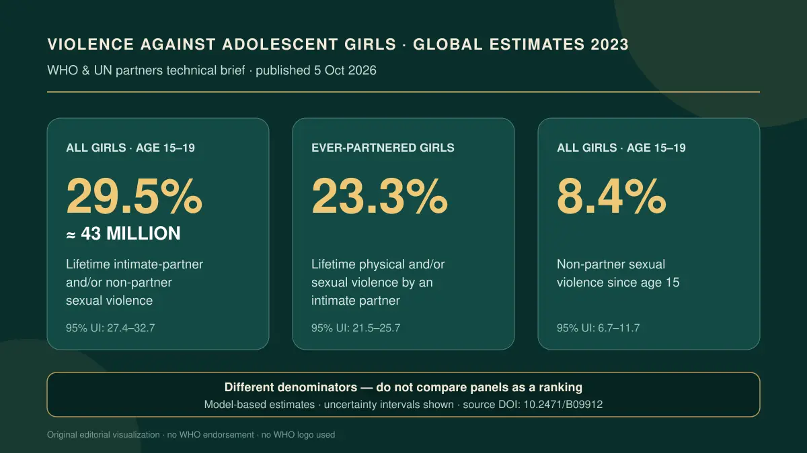

Fotoğraf ve kaynak · Veri: DSÖ ve UNFPA; grafik: Dr. Omid Kheirkhah web sitesiErgen kızlara yönelik şiddet: Yeni küresel tahminler ne söylüyor?
DSÖ ve UNFPA'nın yeni teknik özeti, dünyadaki 15–19 yaşındaki her on kızdan yaklaşık üçünün partner şiddeti veya partner dışı cinsel şiddet biçimlerinden en az birini yaşadığını tahmin ediyor; ancak paydaların farklılığı, eksik bildirim ve model belirsizliği doğru yorum için vazgeçilmez.
Nüfusa dayalı araştırmalardan üretilen modellenmiş yaygınlık tahminlerinin resmi teknik özeti; küresel yükü değerlendirmek için güçlü nüfus düzeyi kanıtı, nedensellik veya bireysel risk kanıtı değil
Yazıyı okuyun 4 dakika okuma